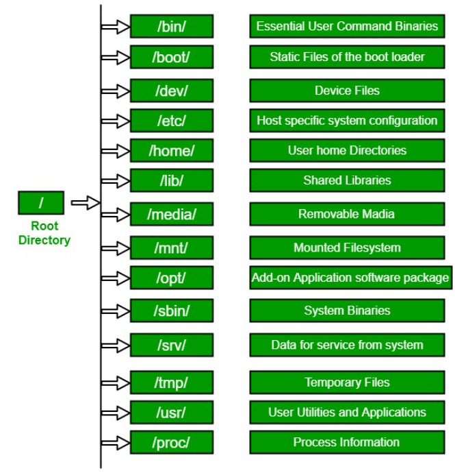
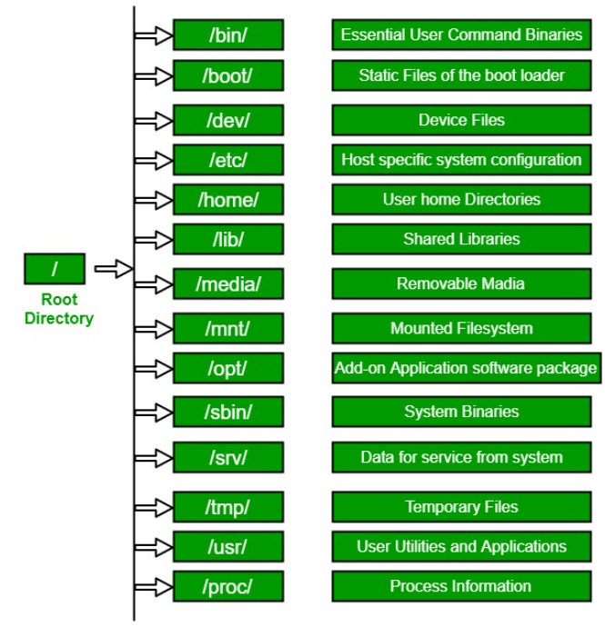

The Linux File Hierarchy Structure follows the Filesystem Hierarchy Standard (FHS), a standard that defines the directory structure and directory contents in Unix-like operating systems.
 

*Binary files are the files which contain compiled source code (or machine code). They are also called executable files because they can be executed on the machine.
Binary directory contains following directories:- /bin - contains user binaries, executable files, Linux commands that are used in single user mode, and common commands that are used by all the users, like cat, cp, cd, ls, etc.
- /sbin - The '/sbin' directory also contains executable files, but unlike '/bin' it only contains system binaries which require root privilege to perform certain tasks and are helpful for system maintenance purpose. e.g. fsck, root, init, ifconfig, etc.
- /lib - contains shared libraries which are often used by the '/bin' and '/sbin' directories. It also contains kernel module. These filenames are identable as ld* or lib*.so.*. For example, ld-linux.so.2 and libfuse.so.2.8.6
- /opt - The term 'opt' is short for optional. Its main purpose is to store optional application software packages.
other folders under root dir are:- /boot - Boot loader files, e.g., kernels, initrd.
- /dev - Essential device files, e.g., /dev/null. These include terminal devices, usb, or any device attached to the system.
- /etc - Host-specific system-wide configuration files. Contains configuration files required by all programs. This also contains startup and shutdown shell scripts used to start/stop individual programs.
- /media - Mount points for removable media such as CD-ROMs. Temporary mount directory for removable devices.
- /mnt - Temporarily mounted filesystems. Temporary mount directory where sysadmins can mount filesystems.
- /srv - Site-specific data served by this system, such as data and scripts for web servers, data offered by FTP servers, and repositories for version control systems. srv stands for service. Contains server specific services related data.
- /tmp - Temporary files. Often not preserved between system reboots, and may be severely size restricted. Files under this directory are deleted when system is rebooted.
- /proc - Virtual filesystem providing process and kernel information as files. In Linux, corresponds to a procfs mount. Generally automatically generated and populated by the system, on the fly. Contains information about system process. This is a pseudo filesystem contains information about running process. For example: /proc/{pid} directory contains information about the process with that particular pid. This is a virtual filesystem with text information about system resources. For example: /proc/uptime